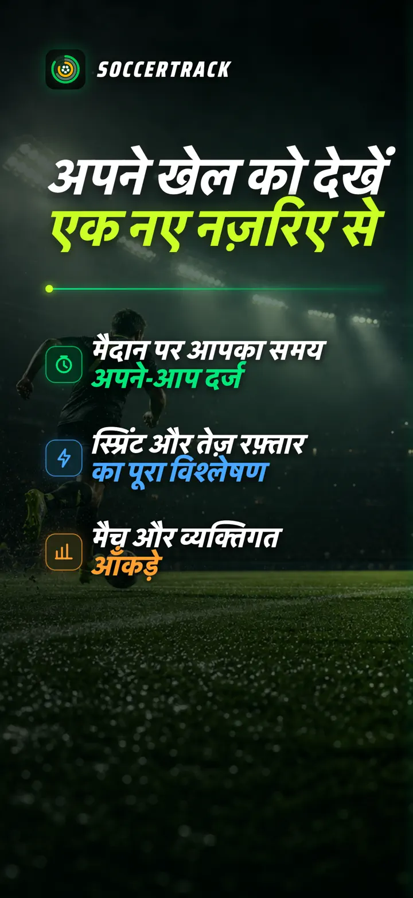
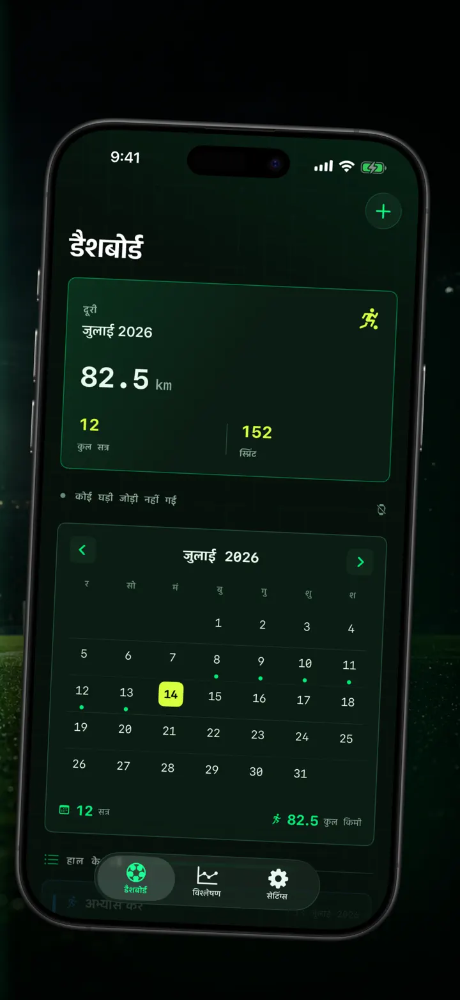
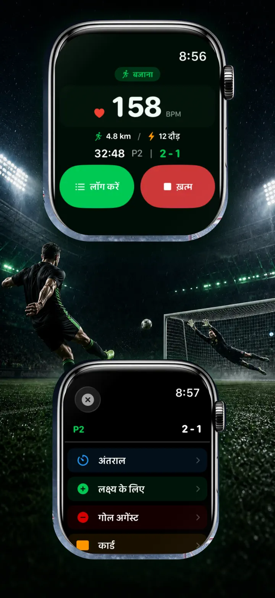
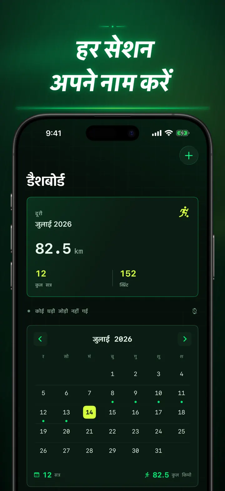
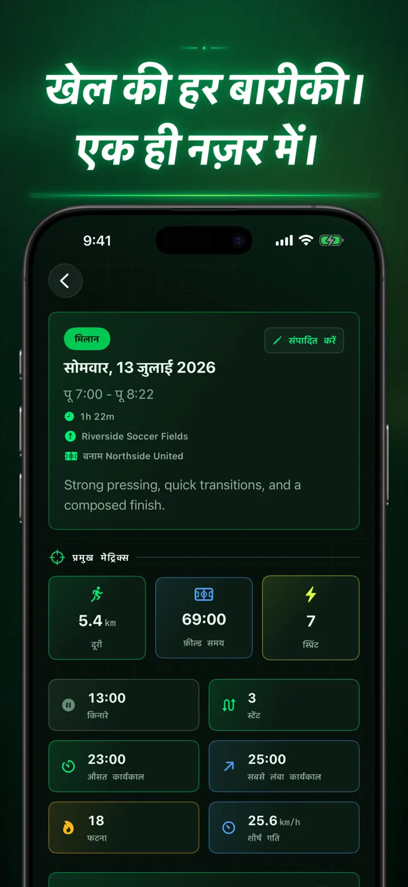
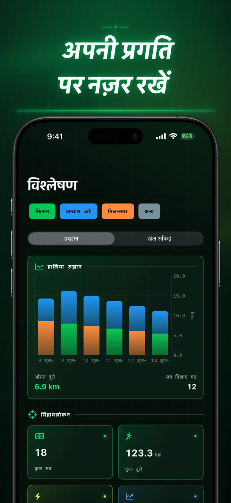
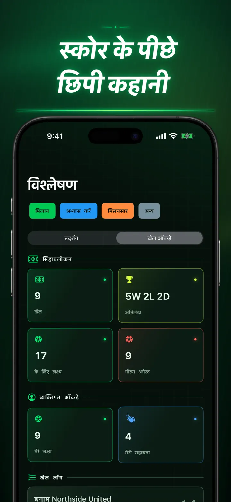
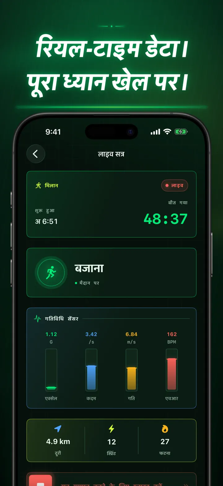
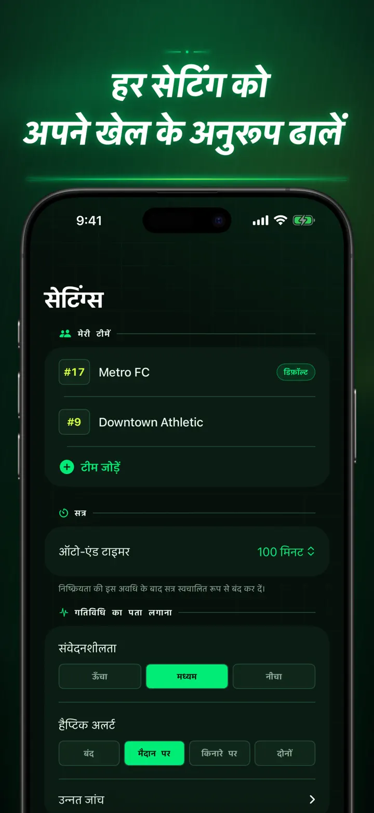
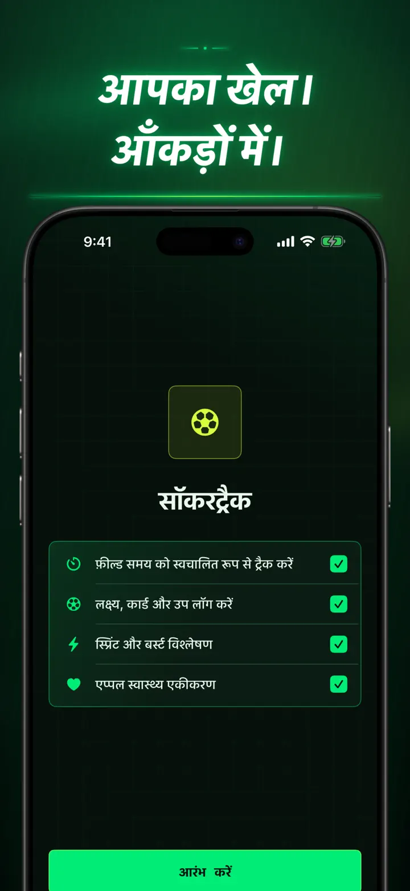

Soccer Time Track
फुटबॉल समय और मैच विश्लेषण
सेशन शुरू करें और खेलें। Apple Watch मैदान और बेंच का समय खुद अलग करता है और लाइव मेट्रिक्स, स्प्रिंट, मैच इवेंट व ट्रेंड रिकॉर्ड करता है।
App Store से डाउनलोड करें
ऐप के बारे में
अपने मैच को एक नए नज़रिए से देखें।
Soccer Time Track Apple Watch को उन खिलाड़ियों के लिए मैच-डे ट्रैकर बनाता है जो अंतिम स्कोर से कहीं अधिक समझना चाहते हैं। कलाई से शुरू करें, खेल पर ध्यान दें और बाद में iPhone पर अपने प्रदर्शन की पूरी तस्वीर देखें।
मैदान का समय, अपने आप
जानें कि आप वास्तव में कब खेल रहे थे। मोशन, वर्कआउट और लोकेशन सिग्नल खेलने, कम गतिविधि और बेंच पर रहने के समय को अलग करने में मदद करते हैं। आपको मिलता है:
- मैदान और बेंच का समय
- खेल के चरण और साफ टाइमलाइन
- पूरे सेशन का विस्तृत विवरण
मैच का हर पल, आपकी कलाई से
मैच, प्रैक्टिस, फ्रेंडली या अन्य चुनें। खेलते समय रिकॉर्ड करें:
- अपनी और विरोधी टीम के गोल
- आपके गोल और असिस्ट
- पीले और लाल कार्ड
- सब्स्टिट्यूशन और हाफ के बदलाव
आपका खेल, मापा हुआ
सिर्फ मिनट नहीं, और भी बहुत कुछ:
- दूरी
- औसत और अधिकतम गति
- स्प्रिंट और तेज़ रफ्तार वाले बर्स्ट
- हार्ट रेट और एक्टिव कैलोरी
- कैडेंस और एक्सेलेरेशन
लाइव डेटा, पूरा फोकस
पेयर किया गया iPhone लाइव मेट्रिक्स दिखा सकता है, जबकि Apple Watch वर्कआउट को चालू रखता है। आप मैच पर ध्यान देते हैं और डेटा बैकग्राउंड में बनता रहता है।
अपनी प्रगति देखें
मैच, प्रैक्टिस, फ्रेंडली और दूसरे सेशन एक ही हिस्ट्री में देखें। ट्रेंड और पर्सनल रिकॉर्ड जानें, प्रदर्शन की तुलना करें और हर नतीजे की कहानी के लिए टीम, जर्सी नंबर, प्रतिद्वंद्वी, जगह और नोट जोड़ें।
डेटा कहीं और चाहिए? सेशन, खेल के चरण और मैच इवेंट CSV या JSON में एक्सपोर्ट करें।
APPLE WATCH और APPLE HEALTH के लिए
आपकी अनुमति से Soccer Time Track विश्लेषण बनाने और पूरे हुए फुटबॉल वर्कआउट Apple Health में सेव करने के लिए वर्कआउट, हार्ट रेट, मोशन और लोकेशन डेटा इस्तेमाल करता है। ऑटोमैटिक ट्रैकिंग के लिए Apple Watch ज़रूरी है। iPhone पर सेशन मैन्युअली भी जोड़ा जा सकता है।
आपका डेटा, आपका खेल
आपके सेशन आपके डिवाइस पर रहते हैं और iCloud Sync चालू होने पर आपके निजी iCloud डेटाबेस में सेव होते हैं। Soccer Time Track में अकाउंट, विज्ञापन या थर्ड-पार्टी एनालिटिक्स नहीं है।
यह अंदाज़ा लगाना छोड़ें कि आप कितना खेले। देखें कि आपने हर मिनट में क्या किया।
गोपनीयता नीति: https://masawata.net/SoccerTimeTrack/privacy-policy.html सेवा की शर्तें: https://www.apple.com/legal/internet-services/itunes/dev/stdeula/
स्क्रीनशॉट









Soccer Time Track
सेशन शुरू करें और खेलें। Apple Watch मैदान और बेंच का समय खुद अलग करता है और लाइव मेट्रिक्स, स्प्रिंट, मैच इवेंट व ट्रेंड रिकॉर्ड करता है।
App Store से डाउनलोड करें